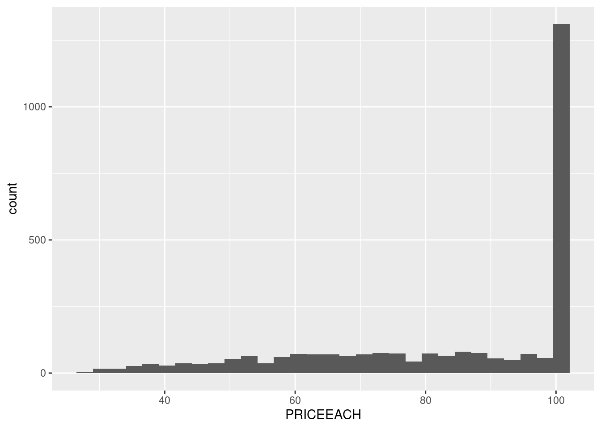

See how I tackle RevoU DAMC’s Certification Case Study using R
Author
invictus
Published
July 24, 2024
Introduction
Recently, I enrolled in a Mini-Course Data Analytics course from RevoU. It’s a basic overview and introduction to the world of Data Analytics. At the end of it, you’ll get a case study you can work on. That case study is the one I’ll be working on today.
Actually, I’ve done a pretty rough analysis and visualization with it, but it was all over the place. So, I want to redo it from scratch, hopefully in a more structured format.
About the case study
Description
The case study contains a dataset about sales data of a fictional company. The columns are described as follows:
ORDERNUMBER: A unique identifier for each sales order.
QUANTITYORDERED: The number of units ordered for a particular product.
PRICEEACH: The price of a single unit of the product.
ORDERDATE: The date when the order was placed.
STATUS: The current status of the order (e.g., Shipped, Cancelled, On Hold).
PRODUCTLINE: The category or line to which the product belongs.
PRODUCTCODE: A unique code identifying the product.
CUSTOMERNAME: The name of the customer who placed the order.
CITY: The city where the customer is located.
DEALSIZE: The size category of the deal (e.g., Small, Medium, Large)
Task
The task is to find answers to the following questions:
Which product lines have the highest and lowest sales? Create a chart that is representable.
Show sales performance over time, is there any pattern?
How does deal size (small, medium, large) correlate with total sales? What is the percentage of contribution for each type of deal?
Get Started
Inspect and Clean Data
Without further ado, let’s load the tidyverse!
library(tidyverse)
── Attaching core tidyverse packages ──────────────────────── tidyverse 2.0.0 ──
✔ dplyr 1.1.4 ✔ readr 2.1.5
✔ forcats 1.0.0 ✔ stringr 1.5.1
✔ ggplot2 3.5.1 ✔ tibble 3.2.1
✔ lubridate 1.9.3 ✔ tidyr 1.3.1
✔ purrr 1.0.2
── Conflicts ────────────────────────────────────────── tidyverse_conflicts() ──
✖ dplyr::filter() masks stats::filter()
✖ dplyr::lag() masks stats::lag()
ℹ Use the conflicted package (<http://conflicted.r-lib.org/>) to force all conflicts to become errors
Just to be safe, let’s take look at the first few lines of the csv.
Looks good enough. Now let’s load the file and take a closer look
df <-read_csv('./revou_damc_case_study.csv')
Rows: 2824 Columns: 10
── Column specification ────────────────────────────────────────────────────────
Delimiter: ","
chr (7): ORDERDATE, STATUS, PRODUCTLINE, PRODUCTCODE, CUSTOMERNAME, CITY, DE...
dbl (3): ORDERNUMBER, QUANTITYORDERED, PRICEEACH
ℹ Use `spec()` to retrieve the full column specification for this data.
ℹ Specify the column types or set `show_col_types = FALSE` to quiet this message.
The first glaring issue is the date. It’s still in <chr>. However, the first few rows have all the same hms (hours, minutes, seconds). So, there’s a possibility it’s the same all the way down. Let’s see…
# A tibble: 1 × 2
ORDERHOUR n
<chr> <int>
1 0:00 2824
I knew it. It’s very unlikely for all orders to be exactly on the same hours. So, the most probable thing is they don’t have data on the hms, so they just insert 0:00 as a placeholder. Since the placeholder is not useful for us, let’s drop it.
Unfortunately, the case study doesn’t provide any information on the currency. So, let’s assume it’s in USD. Now let’s see the distribution.
df |>ggplot(aes(PRICEEACH)) +geom_histogram()
`stat_bin()` using `bins = 30`. Pick better value with `binwidth`.

The price is indeed unusual. From the first few rows, it even seems that it’s not just about ranging around 100, but it’s exactly 100. Let’s set the binwidth to 1 to prove it.
Yeah… I’ll be honest, I have no idea why this could’ve happened, unless the data is fake. (Oh wait, it is!). But in a real world, we can’t do that assumption. We have to be prepared for any unexpected data. So, let’s treat this dataset as a real one even though we know it’s not.
Okay, so the data is sales data, precisely orders data. So, what we got previously is the distribution of the sales, not the price of the product themselves. So, one explanation of it happened is because the products that are most sought of are the one that has the price of $100.
Nevertheless, how many products are there that are priced at $100? 1? 2? if there’s many products priced at $100, then we can assume there’s nothing special with the products. They’re just the most common.
Finally, a normal data! just kidding 😂. Anyway, the distribution looks acceptable. Few outliers there and there, most values are around the median, etc. I’m not familiar with business, but I’m quite certain it doesn’t have the same anomaly as the PRICEEACH.
Analyze and Visualize
The important variables has been checked. Now it’s time to solve the questions.
1. Product Lines Sales
Which product lines have the highest and lowest sales? Create a chart that is representable.
Oh, right. Forgot to check the categorical variables. Welp, let’s just deal with it as we go. Anyway, I assume ‘sales’ here mean the quantity of units sold. We can compute that from aggregating the PRODUCTLINE with their QUANITITYORDERED.
From this, we can see that the lowest sales are from Trains, and the highest is from Classic Cars.
2. Sales Performance Pattern
Show sales performance over time, is there any pattern?
Again, we need to understand what does Sales Perfomance mean? It can be measured from various metrics, depending on the goals, so we need to guess. Since it’s just a simple case study, let’s go with revenue, which can be obtained from multiplying QUANTITYORDERED and PRICEEACH
It looks better now, still feel too much. The Y axis is barely readeable. Maybe we need to display fewer PRODUCTLINE at a time.
All Sales
Actually, I just realized that it wasn’t asked to group by PRODUCTLINE. So, we could’ve just plot the entire sales. For this, we need to re-aggregate the daily_revenue to get a summarized revenue across all PRODUCTLINE.
daily_revenue_total <- daily_revenue |>count(ORDERDATE, wt = REVENUE, name ='total_revenue')
Now we got a clearer broad overview of the trend by year. However, the small size of the plot make it a little bit hard to identify the pattern. Let’s zoom in by drawing each plot for each year.
daily_revenue_total |>filter(year(ORDERDATE) ==2003) |>ggplot(aes(ORDERDATE, total_revenue)) +geom_line() +geom_smooth() +scale_x_date(date_labels ='%b',date_breaks ='1 month') +labs(title ='Total Sales Revenue per Month in 2003')
`geom_smooth()` using method = 'loess' and formula = 'y ~ x'
Now we can clearly see the peak on around November - December. Besides, the sales seem to be already going upward starting from September
daily_revenue_total |>filter(year(ORDERDATE) ==2004) |>ggplot(aes(ORDERDATE, total_revenue)) +geom_line() +geom_smooth() +scale_x_date(date_labels ='%b',date_breaks ='1 month') +labs(title ='Total Sales Revenue per Month in 2004')
`geom_smooth()` using method = 'loess' and formula = 'y ~ x'
In 2005, the pattern a bit fluctuates. Yet, there’s still a generate upward trend toward the last months of the year. Moreover, the peaks are the same, which are around November - December
daily_revenue_total |>filter(year(ORDERDATE) ==2005) |>ggplot(aes(ORDERDATE, total_revenue)) +geom_line() +geom_smooth() +scale_x_date(date_labels ='%b',date_breaks ='1 month') +labs(title ='Total Sales Revenue per Month in 2005')
`geom_smooth()` using method = 'loess' and formula = 'y ~ x'
Unfortunately, in 2005, we’re lacking data toward the later months. So we can’t see the peaks on the same months.
However, based on the pattern of the previous 2 years, we can predict that sales will also increase upward toward the last part of the years, and peak around November - December